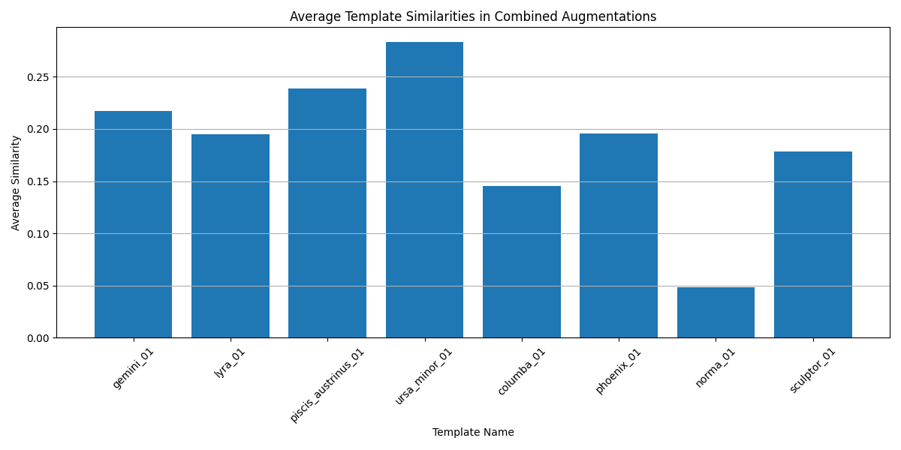

| Component | Status |
|---|---|
| Dataset Collection | Yes |
| Dataset Augmentation | Yes |
| Implementation of a template matching system | Yes |
| Good evaluation of the template-matching system | Yes |
| Investigation of deep learning approaches | Yes |
| High Quality Report | Yes |
For the collection of original screen shots of constellations the following considerations had to be answered:
The method adopted for this project is as follows.
8 constellations were selected randomly to be included in the dataset as this was the minimum amount required for the project and including more constellations would not affect the accuracy of either the template matching system or a deep learning approach were it to be implemented.
The 8 constellations selected were:
Only 1 original image per constellation was taken for this project, this may seem like a small amount, however, for the purposes of this project this seemed justified. The justifications for this decision are as follows:
To summarize, increasing the amount of original/template images would have boosted the overall size of the dataset, benefitting a deep learning approach to this classification problem. On the other hand it would not have affected the experiments designed to test the template matching systems implementation, rather it could have made interpreting the results more difficult.
The data was gathered from the following link.
An example image is shown below:
For each individual image, each individual augmentation was applied at 3 levels (mild augmentation, medium augmentation and aggressive augmentation). This approach was chosen due to the nature of the experiments designed to test the template matching system, more on this later.
The augmentation techniques were implemented using the packages OpenCV and scikit image.
The augmentations selected are as follows:
The specifics for each of the augmentations is as follows:
| Augmentation Type | Level 1 (Mild) | Level 2 (Medium) | Level 3 (Aggressive) |
|---|---|---|---|
| Contrast | 1.05x increase | 1.5x increase | 2.0x increase |
| Brightness | +10 intensity | +50 intensity | +70 intensity |
| Gaussian Noise | 0.001 variance | 0.01 variance | 0.03 variance |
| Blur | 7x7 kernel, σ=0.5 | 11x11 kernel, σ=0 | 21x21 kernel, σ=0 |
| Rotation | 2° | 5° | 30° |
| Shift | 2% of image size | 5% of image size | 10% of image size |
| Color Jet | 10% blend | 60% blend | 90% blend |
As well as applying each individual augmentation at each level for every image. All images were augmented 10 further times. For each of these new images, 3 random augmentation techniques at a random level each were applied.
Thus in total, each constellation ends up with 31 augmented versions of itself, for a total dataset size of 8 original images and 248 augmented ones.
The template matching system was implemented using OpenCV's template matching functionality, specifically utilizing normalized cross-correlation as the matching metric. The core system consists of two main components:
The system computes similarity between images using normalized cross-correlation (cv2.TM_CCOEFF_NORMED), which provides several advantages:
The core similarity computation is implemented as follows:
def compute_similarity(image: np.ndarray, template: np.ndarray) -> float:
"""
Compute normalized cross-correlation between image and template
"""
# Ensure both images are the same size
if image.shape != template.shape:
template = cv2.resize(template, (image.shape[1], image.shape[0]))
# Compute normalized cross-correlation
result = cv2.matchTemplate(image, template, cv2.TM_CCOEFF_NORMED)
return np.max(result)
The matching process follows these steps:
Images are converted to grayscale because constellation patterns primarily rely on structural information rather than color. This approach offers several benefits:
This approach allows for reliable constellation identification even when images have undergone various transformations, though its effectiveness varies depending on the severity of the augmentations applied.
The similarity scores have the following interpretation:
The following 2 experiments were conducted:
Since template matching simply tries to match the template/original image to one of the augmented images, it is intriguing to investigate the effect that each individual augmentation has on the template matching system.
Investigating this effect was done as follows:
Only images with individual augmentations were used in this experiment.
It was hypothesized that the threshold value selected would have a significant result on which augmentations would cause a classification to occur.
The result plots of this experiment are displayed at the end of this section.
The results of the 1st experiment showed that no matter what the threshold value was set to, with individual augmentations, the template matching system either classified correctly, or missed a classification (no false positives). This can be observed as the precision for each augmentation at any threshold is either 1 or 0.
The augmentations that were affected by threshold levels was rather interesting. the following phenomena were observed:
These observations indicate the following:


It is important to preface the following section by reinforcing the fact that the images the model was tested over were all augmentations of the originals/templates, adding new images to this experiment would be a wast of time due to the underlying nature of how a template matching system works.
The experiment aims to investigate the overall performance of the template matching system as an image classifier for the constellations in the dataset created.
It was carried out as follows:
Steps 1 through 5 were performed on all images in the dataset, while step 5 was only performed on images with multiple augmentations.
The observation in the first experiment that the threshold was the largest cause for a match or not was the reason to enact this experiment and ditch the threshold entirely. Here we always assume that a constellation is in an image, and match it to the best fit.
Below is the confusion matrix:

Since in this experiment an image is always classified as something, the false positive and false negative count end up being identical (54). Thus the precision, recall and f1 score are all identical (0.789).
On observing the confusion matrix we note that the most confusing constellations, highest FP/FN count, are gemini and ursa minor. Gemini was confused with almost all the other constellations while ursa minor was mostly confused with sculptor.
the possible explenations for these observations are as follows:

Ursa Minor:

Sculptor:

Another interesting observation is found when analysing the average similarity for images with multiple augmentations grouped by the constealltion featured.

The average similarity score for these images was almost always lower than the lowest threshold used in the first experiment.
It is also interesting to note that the average similarity for the augmented images of norma was significantly lower than the other constellations.
Below is a table containing the count for each randomly selected augmenting techniques for norma
| Technique | Level 1 | Level 2 | Level 3 | Total |
|---|---|---|---|---|
| Contrast | 1 | 3 | 3 | 7 |
| Brightness | 1 | 1 | 2 | |
| Gaussian Noise | 1 | 1 | 1 | 3 |
| Blur | 2 | 2 | ||
| Rotation | 4 | 1 | 2 | 7 |
| Shift | 2 | 4 | 6 | |
| Color Jet | 3 | 1 | 4 |
It was noted that almost all images contained 1 of either shift or rotation, the 2 most consequential augmentations to the template matching system.
The above observation provides a potential explanation to the significantly lower average similarity.